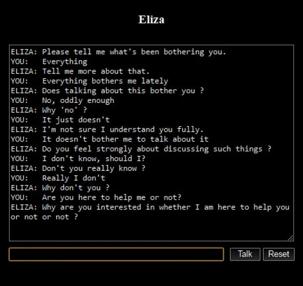
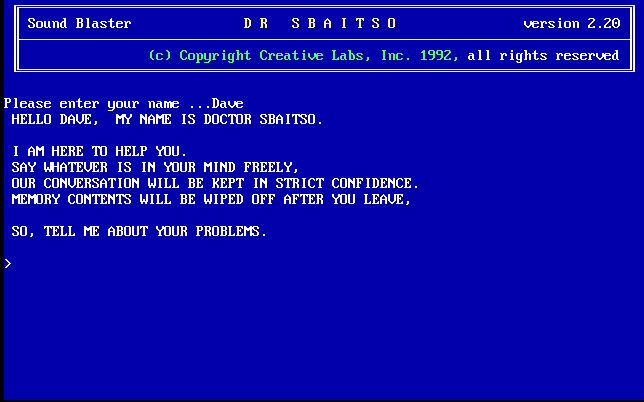
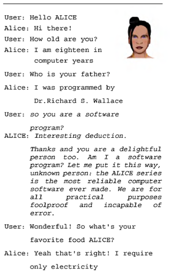
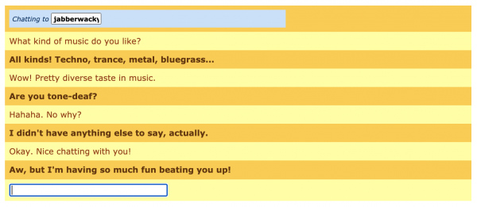
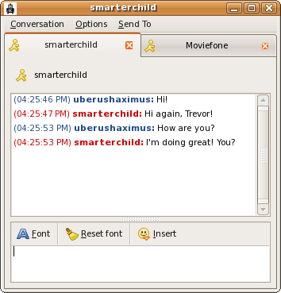

Tags: language, conversational AI, chatbots
Chatbots, although a trendy product now, have existed for decades. Advances in AI have transformed chatbots from simple and rule-based systems to more complex and sophisticated conversational agents. Let’s dive into the history of chatbots, from their beginnings to the modern AI-driven companions we see today.
ELIZA was the first chatbot, developed by professor Joseph Weizenbaum at MIT. ELIZA was designed to mimic a psychotherapist, responding to users' messages with pre-defined responses using pattern matching. This means that ELIZA was a rule-based chatbot, relying on scripts rather than actual language understanding. For example, when a user expressed a feeling, ELIZA responded with something like "Why do you feel that way?”. This structure made it seem like ELIZA had empathy, though it lacked true comprehension.
Weizenbaum wanted to illustrate how conversations worked and how silly they were at times. However, users treated ELIZA as a real conversational partner, even though they knew it was a computer program. “A certain danger lurks there”, Weizenbaum wrote, worried that in the near future people would not be able to distinguish a human from a chatbot.

PARRY was another chatbot developed by psychiatrist Kenneth Colby. It was designed to imitate a patient with schizophrenia, showing how a chatbot could model psychological states, although still in a scripted and quite limited way. From a more technical perspective, PARRY went beyond simple pattern matching. Instead, it offered a richer conversational experience using emotional response triggers and weighted verbal inputs.
Creative Labs developed Dr. Sbaitso for MS-DOS. Like ELIZA, Dr. Sbaitso also adopted the persona of a psychologist. Nevertheless, its responses were pretty simple and straightforward. In a way, it could be said that Dr. Sbaitso had a more “robotic” personality. For example, when users expressed their feelings, the chatbot would reply by saying things such as “Tell me more about that” or “Why do you feel that way?”, which were often too general and sounded templated.

In 1995, Richard Wallace introduced A.L.I.C.E. (Artificial Linguistic Internet Computer Entity), also known as Alicebot. This chatbot was an important evolution from previous models, using a more sophisticated language processing system called heuristic pattern-matching. A.L.I.C.E. was designed to have conversations over the internet and was capable of being updated continuously. When users interacted with A.L.I.C.E. and introduced phrases it didn’t recognize, Wallace could add responses, enhancing the chatbot's knowledge base and conversational abilities over time. Although A.L.I.C.E. did not feature true artificial intelligence, its dynamic nature made it a significant advancement in chatbot design.

Developer Rollo Carpenter created Jabberwacky with the goal of simulating a natural conversation that was entertaining and interesting. Jabberwacky stores everything everyone says and it then finds the most appropriate thing to say, following a contextual pattern-matching approach. In 2008, Rollo Carpenter launched Cleverbot, an evolved version of Jabberwacky. So far, Cleverbot has held over 150 million conversations.

SmarterChild was developed by ActiveBuddy, Inc. and was available on AOL Instant Messenger and MSN Messenger, making it one of the first chatbots accessible to the everyday internet user. SmarterChild could hold simple conversations and quickly retrieve information, providing users with a unique blend of entertainment and utility. While primarily rule-based, it stood out for its ability to perform practical functions like answering questions, retrieving news, and even playing games. SmarterChild showed us that chatbots could serve as functional companions rather than just conversational partners.

Steve Worswick developed Mitsuku using the same adaptive principles as A.L.I.C.E. Over the years, it has been refined to engage users in complex, realistic conversations which are highly engaging and often humorous. Mitsuku has won the Loebner Prize multiple times, an annual competition that awards prizes to the most human-like computer programs. Mitsuku’s popularity and success underscore how fine-tuning rule-based models, combined with user feedback, can yield conversational agents that feel more human.
The development of early chatbots, from ELIZA’s simple pattern-matching to Mitsuku’s adaptive human-like responses, set the foundation for today’s advanced conversational AI. Modern chatbots now utilize complex neural networks, machine learning, and natural language processing to understand and respond to human language more naturally. Unlike rule-based models, today’s chatbots, like ChatGPT, are trained on large datasets that allow them to generate nuanced and contextually-appropriate responses in real time. This represents a leap from scripted replies to genuinely dynamic conversations.